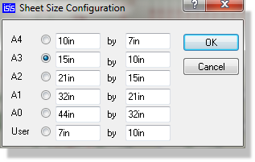
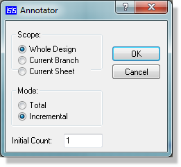
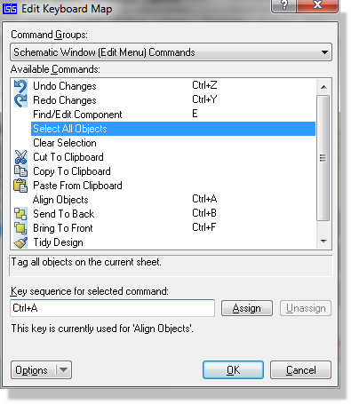

When a new sheet is created either as the first sheet of a new design, or by using the New Sheet command, it starts off at the size currently specified via the Set Sheet Sizes command. The extent of the sheet is shown by a dark blue sheet outline but this in itself will not actually appear on hard copy.
If a sheet border is required on the final output, you must place a graphics box (or whatever) over the sheet outline or use one of the pre-supplied templates.
The Set Sheet Sizes command is worthy of further discussion since it serves two distinct purposes:
The Set Sheet Sizes dialogue form allows you to define the sizes of five standard sheet sizes (A4 through to A0) as well as a non-standard size and to select which one is the size if the current sheet.

The Set Sheets Sizes dialogue form
For each sheet size (A4-A0 and user) there are two edit fields. The left field defines the width (x-dimension) and the right side defines the height (y-dimension). Whenever the schematic loads a sheet that does not match any of the standard (A4-A0) sheet sizes it places the dimensions of the sheet into the User field and sets that to be the default sheet size for the loaded sheet.
The default values for the standard sheet sizes should work for most printers but please note that all printers have ‘margins’ in which they cannot print - if you attempt to print something that impinges on the margins it will most likely not be drawn. The size of the margin where a printer cannot print varies between printers and the best way to determine it is to draw a sample design with a box that surrounds your chosen sheet size and then printing it. If one or more edges of the box do not appear on the printed output then your sheet size extends into the printers margins and you should reduce it.
There is one more point to note about sheet sizes: Every sheet in a design carries its actual dimensions with it in the design file. If a design is loaded into a the schematic editor with a different sheet size configuration, this will not have any effect unless and until the Set Sheet Sizes command is used.
It is recommended that you either use an existing template or customise the size of a blank schematic and save it as a template. This is then re-usable for all future designs.
In order to use the component placement report you should either use one of our pre-defined templates or set the smart grid markers on a sheet border of your own making. More information here.
It is common practice to have on each sheet of a drawing a header block which shows details such as the design and sheet titles, the document, revision and page numbers, and the design's author.
In order that you have full control over how this information is presented, the header block is defined as a symbol library entry called HEADER. This was made in the usual way by placing graphics objects, tagging them and invoking the Make Symbol command. The significant thing is where, for example, the current design title is required, a text object with the string @DTITLE was placed and this is automatically replaced with the actual design title at display/print time.
The complete list of such keywords is shown below :
| Keyword | Description | SCHEMATIC | PCB |
|
@DTITLE |
The design title taken from the Edit Design Properties command on the Design Menu. | ||
|
@BOARD |
The current board name, taken from the name supplied. Relevant only for multi-board projects. | ||
|
@STITLE |
The sheet title taken from the Edit Sheet Properties command on the Design Menu. | ||
|
@DOCNO |
The design document number taken from the Edit Design Properties command on the Design Menu. | ||
|
@REV |
The design revision number taken from the Edit Design Properties command on the Design Menu. | ||
|
@AUTHOR |
The design author taken from the Edit Design Properties command on the Design Menu. | ||
|
@CDATE |
The design creation date - generated automatically in a fixed format. | ||
|
@MDATE |
The design modification date - generated automatically in a fixed format. | ||
|
@WS_CDATE |
The design creation date - generated automatically and formatted according to the Windows short format. | ||
|
@WL_CDATE |
The design creation date - generation automatically and formatted according to the Windows long format. | ||
|
@WS_MDATE |
The design modification date - generated automatically and formatted according to the Windows short format. | ||
|
@WL_MDATE |
The design modification date - generated automatically and formatted according to the Windows long format. | ||
|
@CTIME |
The design creation time - generated automatically and formatted according to the Windows time format. | ||
|
@MTIME |
The design modification time - generated automatically and formatted according to the windows time format. | ||
|
@PAGENUM |
The current sheet page number within the design. | ||
|
@PAGECOUNT |
The total number of sheets in the design. | ||
|
@PAGE |
The sheet number within the design expressed as X/Y where X is the sheet page number and Y is the total number of sheets in the design. | ||
|
@FILENAME |
The current designs filename. | ||
|
@PATHNAME |
The full path and filename of the current design file. | ||
|
@PAGESIZE |
The page / sheet size as set in the System Menu > Set Sheet Size. | ||
|
@VARIANT |
The name of the currently active assembly variant. Can be used both on schematic (e.g. Header block) and on layout (e.g. Silkscreen text). | ||
|
@Board |
The name of the Board that you are currently working on |
The Windows long and short date formats and Windows time formats are set using the Regional Settings or International applets in Windows Control Panel.
Note that the above keywords must appear at the start of a 2D text string and that the string should not contain additional text. For example, do not place strings of the form:
AUTHORED BY @AUTHOR ON @WS_MDATE
as these will not work! To achieve the above you need to place four strings along side each other (AUTHORED BY, @AUTHOR, ON and @WS_MDATE).
By use of the import bitmap facility, 2D graphics objects and such special text objects it is possible to define any kind of header block you want. In particular, you can incorporate your company logo into the header. Once defined, the header can be placed onto each sheet of the drawing like any other graphics symbol.
We strongly advise you, having created your header block, to place one on the Master Sheet and save as a design template. Please see the help documentation on templates for more information or run through the Tutorial.
Sometimes several objects (especially Graphics) overlap and it becomes difficult to point at the one you want. By default, Proteus takes the most recently placed object, but you can re-arrange the order using the Send to Back and Bring to Front commands. Each command operates on the currently tagged objects.
You can also use these commands to order the draw order when creating new devices. For example, if you are creating a new op-amp symbol, you may need to send the op-amp body (the triangle graphic) ‘to the back’ in order to ensure it’s fill pattern doesn’t obscure the ‘+’ and ‘-’ input symbols, which of course, need to be ‘in front’.
Proteus can automatically chose component references for all or some of the components in a design - this process is called Auto-Annotation.
The process is initiated using the Global Annotator command on the Tools Menu.

The Global Annotator dialogue form
The scope options allow you to annotate either the whole design, the current branch of the design (from the sheet you are on downwards in the hierarchy) or on the current sheet only.
The initial annotation option will define the base annotation for the current sheet and will set this property for the current sheet. If you are operating in branch or design mode then any specified sheet offsets on other sheets will be honoured.
The mode options specify whether all parts should be re-annotated (total mode) or only un-annotated parts (incremental mode).
As with all dialogues in Proteus, comprehensive context sensitive help is provided for all the fields on the form. Use the question mark at the top right of the dialogue form to 'point and shoot' at a field for more information.
Proteus provides an interface for you to map the keyboard to a command set. This allows you to ‘bring out’ the functionality you commonly use according to personal preference. The configuration dialogue, accessible via the Set Keyboard Mapping command is shown below (context sensitive help is available for all fields within the dialogue itself):

The Keyboard Configuration dialogue form
Notes :